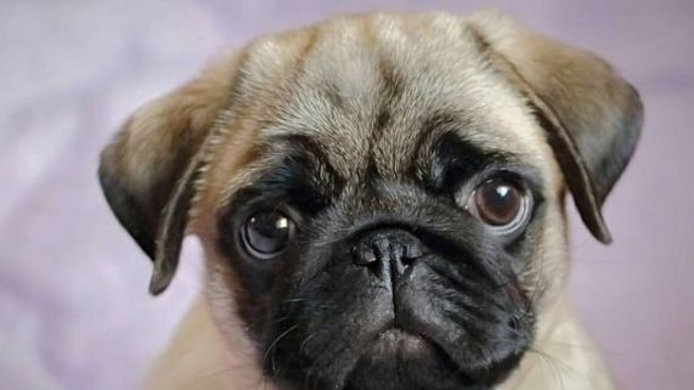
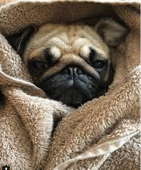

Pugs For Life
Estos hermosos perros, son conocidos en todo el mundo por sus caras graciosas y su forma de ser tan divertida, estos cachorros son conocidos porque expresan muy fácil mente sus emociones en sus caritas, lo que los hace fáciles de entender.

La raza pug no son grades nadadores.
La raza pug tiene un cuerpo pequeno y corto lo cual les impide nadar bien, no esperes que tu cachorro pug sea un gran nadador, debes ponerle cuidado.

Es una raza que proviene de china.
Desde tiempos milenarios esta hermosa raza ha sido venerada por los emperadores chinos, estos cachorros tenian unas vidas con grandes lujos y ademas eran cuidados por solados.

Duermen 14 horas al día
Si eres de las personas que les gusta dormir, definitivamente esta raza es para ti. la raza pug duerme aproximadamente 14 horas al dia, pasa mas de la mitad de su vida la pasa durmiendo.

Porque son asombrosos?
Por muchas razones....
Tienen un muy buen temperamento
La raza pug se caracteriza por ser muy buenos con los ninos y con los ancianos, es una raza con un temperamento muy tranquilo.
Son los perros que tiene el rostro mas expresivo
Estos hermosos perros, son conocidos en todo el mundo por sus caras graciosas y su forma de ser tan divertida, estos cachorros son conocidos porque expresan muy facil mente sus emociones en sus caritas.